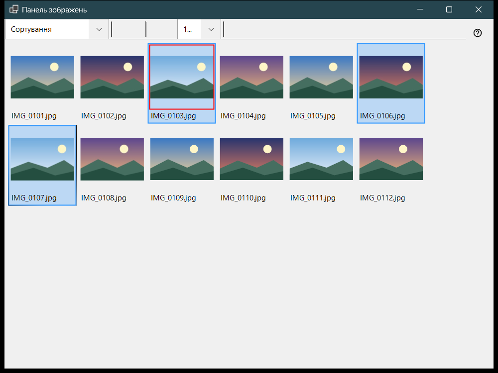
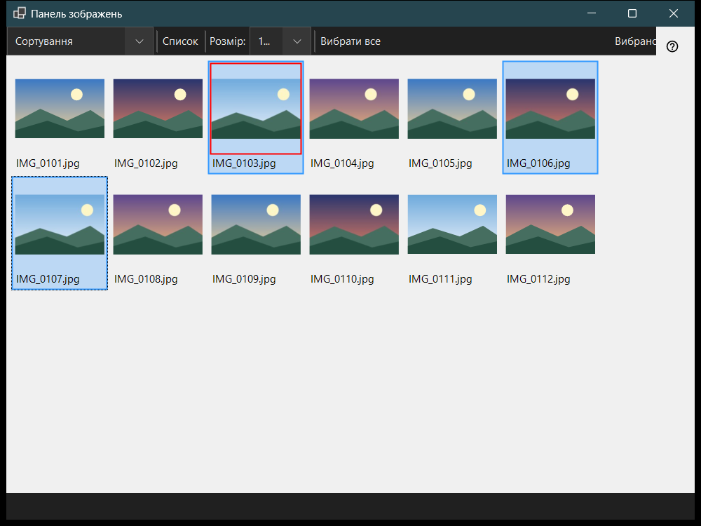

Панель зображень
Призначення
Панель зображень відкривається за F3 із переглядача й працює у двох режимах, які вибирають у списку «Режим панелі»: Сортування - сітка мініатюр поточної папки, і Файловий менеджер - огляд місць і папок із командами для файлів. Перегляд файлів, виділення й закриття панелі не змінюють того, що показує головне вікно.


Порядок дій
- Натисніть F3 у переглядачі.
- Виберіть режим у списку «Режим панелі».
- Виділіть файли: клац, Shift+клац для діапазону, Ctrl+клац для одного файлу або рамка перетягуванням.
- У режимі сортування натисніть 0-9, щоб перенести виділене до папки отримувача, або Shift із цифрою верхнього ряду, щоб скопіювати; Ctrl+Z скасовує останню операцію.
- Двічі клацніть файл або натисніть Enter, щоб відкрити його в головному вікні.
- Esc скасовує поточну операцію, повторне Esc закриває панель.
Елементи вікна
Режим панелі
«Режим панелі» перемикає Сортування і Файловий менеджер. Режим сортування показує мініатюри поточної папки для швидкого перенесення й копіювання; файловий менеджер відкриває будь-яку папку та дає команди для файлів.
Розмір, вигляд і виділення
Повзунок (Розмір:) задає розмір мініатюр, кнопки «Плитки» і «Список» перемикають вигляд (Ctrl+L), а лічильник виділення показує, скільки файлів виділено із загальної кількості.
Виділення й сортування
Клац виділяє файл, Shift+клац - діапазон, Ctrl+клац перемикає один файл, а перетягування малює рамку виділення. Ctrl+A виділяє все, Ctrl+Shift+A знімає виділення, Ctrl+I обертає його, пробіл позначає файл, а стрілки, Home, End, PgUp і PgDn переміщують списком. Цифри 0-9 переносять виділене до папки отримувача цієї клавіші, Shift із цифрою верхнього ряду копіює, Del видаляє, Ctrl+Z скасовує останню операцію.
Фільтр і приховані файли
Фільтр вмісту вибирає Медіафайли, Медіа та документи або Всі файли, а «Приховані» показує чи ховає приховані файли. «Налаштування..» відкриває вікно налаштувань на сторінці Файловий менеджер, де задаються режим відображення, фільтр, місця й запам'ятовування сортування.
Команди з файлами
Ctrl+C, Ctrl+X і Ctrl+V копіюють, вирізають і вставляють, F2 перейменовує, Ctrl+Shift+N створює папку, Del і Shift+Del видаляють виділене, а Alt+Enter показує властивості. Копіювання й перенесення між ресурсами йдуть через цей комп'ютер.
Створити ZIP
«Створити ZIP» пакує всі виділені папки й файли в один архів. Видалення вихідних файлів за замовчуванням вимкнено, і воно дозволяється лише після перевірки та публікації архіву.
Розпакувати тут
«Розпакувати тут» працює з одним вибраним архівом: папки та звичайні файли зберігаються, вихідний архів залишається на місці, а розпаковані програми не запускаються. Esc скасовує операцію.